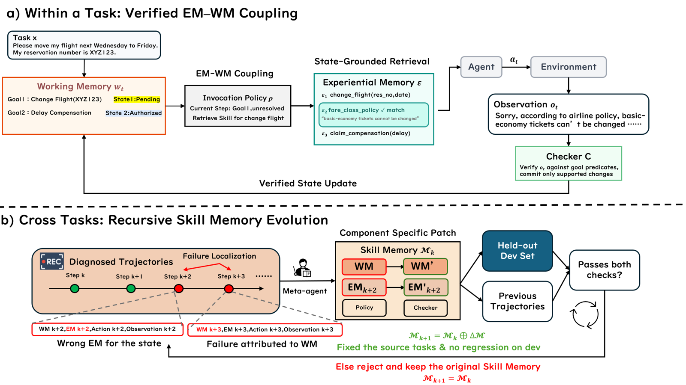
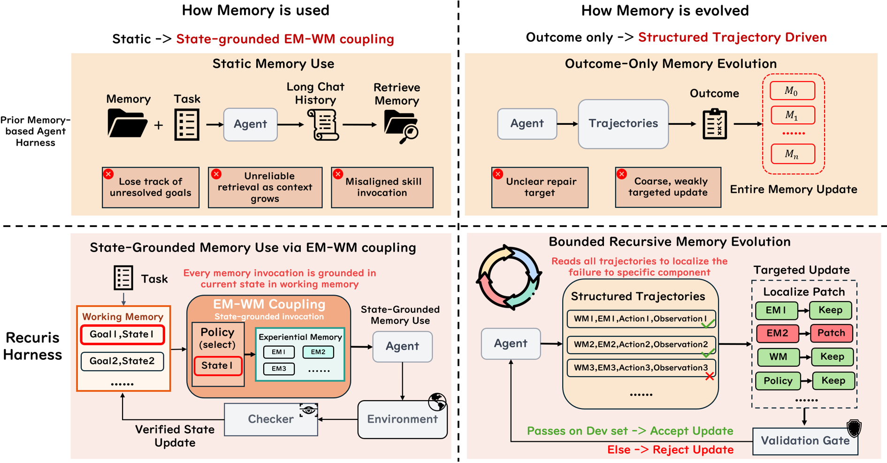

Recuris: Maintaining a Skill Library That Knows When It Is Needed
TL;DR
- "Recursive Experiential-Working Memory Evolution for Long-Horizon Agent Harnesses" (arXiv 2608.24876; Zhaochen Yu, Yingcheng Wu, Zhenfei Yin, Kaiyuan Chen, Zhe Zhao, Mengdi Wang, Shuicheng Yan, Ling Yang) makes one claim the rest of the paper is built to defend: a skill library is worth almost nothing on its own, and almost everything once something knows when to hand each skill over. On τ²-Retail the library alone is worth +2.0 points (interval spans zero); the state that decides when to invoke it is worth +23.9.
- Recuris splits agent memory into Working Memory (a verified list of goals and their status) and Experiential Memory (the skill library), and retrieves from the second using the first. That coupling emits a structured trace, which lets a fixed Meta-Agent attribute a failed run to one of four memory components at 64.8% accuracy versus 13.0% from the task outcome alone.
- One memory, evolved from sixteen failed tasks on a mid-sized model, transfers unchanged: +17.8 points to GPT-5.6 Sol and +15.6 to Claude Opus 5 on τ²-Retail (taking Opus 5 to 87.9%), improving 35 of 37 completed model-benchmark pairs. The base model is never touched — the trainable surface is the memory layer.
Why this matters
Almost every skill-library paper in this tracker answers the question what should we store. MSCE crystallizes traces into callable skills with applicability metadata; HiSME evolves the rules that write skills; SkillRise trains a policy to curate a skill document with RL. All assume that once a good skill exists and is reachable, it will be used.
Recuris attacks that assumption, and the ablation is brutal. Take the identical ten-skill library, byte-for-byte, and inject all of it every turn — the standard "load your SKILL.md files" pattern. That scores 65.6 on τ²-Retail. The same agent carrying no skills at all, but tracking a verified task state, scores 82.0. More skill text in front of the model is worse than none, and costs 45% more tokens per success. This is "Agent Skills Can Be Harmful" measured from the other direction: that paper counted the failures relevant-but-misapplied skills cause, this one shows what recovers them.
The second reason to care is diagnostic. If your harness has a skill library, a retrieval rule, a state tracker, and a verifier, "the run failed" tells you nothing about which of the four to fix — and the standard answer is to rewrite the whole memory from the outcome. A structured trace makes the culprit identifiable, which is the precondition for any repair loop that is not guessing.
The core idea
In plain English first. The agent keeps a short checklist of what the task requires and what it has actually accomplished — not what it said it accomplished, but what a tool receipt proved. Whenever it is about to do something consequential, the harness reads that checklist, pulls the one relevant skill out of the library, and puts it in front of the model before the action goes out. Afterwards a checker reads the environment's response and decides whether any checklist item may be marked done. Because every step records the checklist, the skill supplied, the action and the observation, a failed run is not an opaque transcript but a timeline showing where state and world diverged.
The vocabulary, as used. Experiential Memory is the skill library, in the Agent Skills format. Working Memory is the per-task checklist: each goal carries content, a status (pending / done / blocked), supporting evidence, and an optional blocker. The invocation policy decides at which moments skills are retrieved and which ones. The checkers are completion predicates that read tool results rather than the model's claims. Those four together are the Skill Memory — the only things Recuris ever modifies. The base model, tools, Meta-Agent, patching procedure and validation gate are all fixed.

Figure 3 from the paper. (a) is the within-task loop: state selects skill, skill shapes action, observation verifies state. (b) is the cross-task loop: trace to diagnosis to scoped patch to gate.

Figure 2 from the paper: the two departures from prior memory harnesses, side by side.
How it works
The loop in one sentence. The harness keeps a verified checklist of what the task still needs, uses it to hand the agent exactly one relevant skill at the moment of each consequential action, and then — across tasks — reads the resulting timelines to figure out which part of that machinery to patch. Everything else is detail about how the checklist is verified and how the patch is scoped.
One failed task, start to finish
The setup, from the paper's own case studies on τ²-Retail — a customer-service benchmark where success requires the database to end up correct, so an episode that ends in friendly agreement but changes nothing is a failure.
Step 1 — What does the task actually require? A customer wants to return one item and exchange another. The harness turns that into a checklist with two entries, both pending, each with an empty evidence field. That is the whole state: no transcript summary, no embedding, just goals and whether anything has proved them done.
Step 2 — The agent drafts a consequential action. Mid-conversation the model drafts a tool call that would change the database. The harness intercepts it and does not execute it, returning a synthetic "not executed" result instead. That is the trigger for retrieval.
Step 3 — Fetch the one skill that matches. The retrieval key is the tool the drafted call named. One skill comes back and enters the context, so the action finally issued is drafted with that skill in view. The paper calls this call-time invocation; the alternative it also implements, boundary invocation, supplies skills once at the start of an attempt, which is what the Terminal-Bench configuration uses.
Step 4 — Act, and let the environment decide what happened. The call goes out. A checker reads the returned tool receipt and asks a narrow question: does this observation support marking that goal done? Verbal confirmation does not count; attempting the call does not count. Only a matching successful receipt moves a goal to done; otherwise it stays pending or becomes blocked. In the paper's matched example, a conventional agent reaches verbal confirmation and issues neither required tool call, while Recuris keeps both goals visibly open until receipts arrive.
Step 5 — Repeat until the checklist is empty. The state keeps unresolved work visible for the rest of the episode. That is the entire within-task mechanism, and where most of the headline gain lives.
Now the run that fails, and the second loop.
Step 6 — A failure the transcript alone would misdiagnose. On a different exchange task the agent reuses the original item's identifier as the replacement. The tool acknowledges the call — it is a well-formed request — so nothing looks wrong in the dialogue, but the task state is now incorrect and the run fails.
Step 7 — Attribute the failure to one component. A fixed Meta-Agent (an LLM agent built on Claude Code; a second implementation on DeepSeek Harness is tested later) reads the timeline and picks which of four things to repair:
| Component | What it is | What a failure attributed to it looks like |
|---|---|---|
| Skill library | the reusable procedures | a missing or wrong procedure |
| Working-memory spec | what the checklist tracks and how it proposes updates | an omitted goal, a bad field, a wrong proposed update |
| Invocation policy | when skills are fetched and which ones | a skill that arrived late, wrong, or never |
| Checkers | the completion predicates | a supported transition rejected, or an unsupported one accepted |
Here the diagnosis is the skill library: the exchange procedure never says to look up a valid variant identifier first. This is a repair decision, not a causal claim — the paper is explicit that several mechanisms may contribute, and it picks where an intervention is most likely to help.
Step 8 — Patch that component only, and make the patch prove itself. The Meta-Agent revises the exchange procedure to retrieve a valid variant identifier before the call; everything outside the implicated component is copied over unchanged. A fixed gate then re-runs the candidate against the failed task and a held-out development set of anchor tasks the current memory already solves, admitting it only if it repairs the failure without regressing the anchors. Once admitted, the updated memory succeeds on an unseen matched task — and changes what future runs look like, which is what makes the loop recursive rather than a one-shot patch.
The machinery behind steps 1-5
Four decisions above were stated plainly; here is what governs them.
The thing being evolved is a four-tuple:
Read left to right: \(k\) indexes the evolution round, so \(\mathcal{M}_k\) is the memory layer as it stands at round \(k\); \(\mathcal{E}_k\) is the experiential memory, the set of stored skills; \(\mathcal{W}_k\) is the working-memory specification — the schema of the checklist plus the rule that proposes updates to it; \(\rho_k\) is the invocation policy; \(\mathcal{C}_k\) is the set of checkers. These four are the entire patch space.
Step 3, retrieval, is one function call:
Here \(t\) indexes steps within an episode; \(x\) is the task instruction; \(w_t\) is the current checklist; \(e_t\) is the execution event that fired at this step — a drafted state-changing call, or a turn boundary; \(\mathcal{E}_t\) is the small subset of skills that enters the context. The point is what is absent: the interaction history is not an argument. The model still sees the history when producing its action, but which skills reach it is decided from progress and event only.
Step 4, verification, is three lines that separate proposing from committing:
\(a_t\) is the action taken and \(o_t\) the environment's observation. \(U_{\mathcal{W}_k}\) proposes a next checklist \(\widetilde{w}_{t+1}\) — the tilde marks it as a proposal, not a fact. \(\mathcal{C}_k\) evaluates that proposal against the observation and emits decisions \(c_t\). \(K\) is a fixed commit rule in the harness — not evolvable, not model-written — that merges only the supported changes into the real next state \(w_{t+1}\). A goal moves to done only when its checker returns 1. That split is the difference between an explicit state and a trustworthy one: a state the model writes for itself is exactly as reliable as the model.
The machinery behind steps 6-8
The diagnosis is one equation, and its type signature is the whole idea:
\(\mathcal{A}_{\text{fixed}}\) is the localization stage of the Meta-Agent — fixed means the same implementation, prompts and procedure at every round on every benchmark. \(\Gamma_k\) is the structured trace: unlike a raw transcript, it records at every step the state that triggered retrieval, the skills supplied, the action, the observation, the proposed next state, and the checker decisions. \(J_k\) is how many distinct failures were diagnosed, \(f_j\) is one of them, \(z_j\) names the component to repair. The output is not a rewrite and not a score — it is a set of (failure, address) pairs drawn from a four-element alphabet, and patching edits exactly those components.
Why the trace matters is measured rather than asserted. Inject a known fault into one component and ask a fixed judge to name the culprit. Against a 33.3% constant-answer floor, macro accuracy is 13.0% from the outcome alone (below the floor), 37.0% from the raw trajectory, and 64.8% from the structured trace. The gain is observability, not reasoning: an invocation fault is a non-event — nothing appears in the transcript where a skill should have been injected — and neither condition without the trace's mechanism events names it even once, against 38.9% with it.
# Recuris: two nested loops
# Inner (per task) --------------------------------------------------
w <- initial checklist from task x under spec W
for t = 1..L:
e <- execution event? # drafted state-changing call, or turn boundary
if e fires:
skills <- rho(x, w, e, E) # retrieval key = the tool the call named
inject skills; drafted call NOT executed, synthetic result returned
a <- model acts (sees history + w + skills)
o <- Env(a)
w_prop <- U_W(w, a, o) # proposed next checklist
c <- C(w, w_prop, a, o) # checkers read the RECEIPT, not the claim
w <- K(w, w_prop, c) # commit only supported changes
record (w, skills, a, o, w_prop, c, w') into trace Gamma
# Outer (across tasks) ----------------------------------------------
for round k = 1..:
for each failed run:
D <- A_fixed(Gamma, M) # {(failure, one of E / W / rho / C)}
patch each implicated component; copy the rest # -> M+
if G_fixed(M+, M; failed task, dev anchors): M <- M+ # else discard
# new memory changes future runs -> new traces -> next round
What the design leaves open
Three limits are visible in the paper's own numbers, and they belong here rather than in the middle of the story.
The memory only grows. Eight accepted patches added 51 skills, revised 2, and deprecated none, leaving 17 near-duplicate pairs. Recuris survives this only because no single skill carries the gain — rebuilding a package without its procedure skills moves the held-out result by −2.3 to +1.7 points, every interval containing zero. Redundant rather than fragile, but there is no pruning operator.
Rounds are not monotone. Run A plateaued at round 3; Run C peaked at +17.44 in round 2 and gave most of it back; Run B's round-4 candidate was never invoked on any held-out task at all — a broken binding, not a diminishing return. The in-round gate cannot resolve differences this fine: two runs of an unchanged package on the 10-14 task dev split differ by [−12.1, +11.1] points.
Cross-task evolution needs shared structure. On Terminal-Bench 2.1, whose tasks share no tools or policies, the loop admitted no patch in thirteen runs; the per-task fallback mode's headline +26.4 points comes from the retry budget, not from learning.
Results
Throughout, † marks a paired task-clustered bootstrap 95% confidence interval that excludes zero.
- Where the gain comes from (τ²-Retail, 114 tasks, 456 episodes, matched model/tools/seeds/budget): base 58.1; skill library only 60.1 (+2.0, CI [−4.0, +7.9]); verified working state only 82.0 (+23.9†); same library injected in full every turn with the model deciding 65.6 (+7.5†); coupled 83.6 (+25.4†). Against the model-controlled variant carrying the byte-identical library, Recuris leads by 18.0 points [+11.6, +24.6].
- The failure it fixes is execution, not retrieval. Read-action recall stays at 88.0-97.9% for every variant in every horizon quartile — no agent, at any length, fails to find out what its task needs — while required-write recall separates by 26.7 points. The base agent ends 42% of write-requiring episodes having executed none, against 16% for Recuris; omitted required writes per episode fall 0.596 → 0.121 (the "up to 80%" in the thread). The median turn of the first correct write is 18 in all four variants: what changes is not when the agent acts but whether.
- Horizon. Recuris leads in all four quartiles of task-intrinsic length, by +17.0 to +44.7 points, with no monotone decline; the abstract summarizes the longest-task advantage as +32.2.
- Model transfer (one package, evolved on doubao-seed-2-0-pro, shipped unchanged): GPT-5.6 Sol 58.33 → 76.10 (+17.76†), Claude Opus 5 72.37 → 87.94 (+15.57†), Gemini 3.7 Flash 73.46 → 78.29 (+4.82, CI touches zero). Not a crutch for weak models — the strongest target ends highest — but headroom is a ceiling, not a prediction: at nearly identical starting levels (72.4 and 73.5) the same package is worth +15.6 and +4.8.
- Held-out evolution. From 16 training failures, 12 dev tasks, and 86 tasks nothing touches: every package reaching the held-out set clears the starting memory by +9.01 to +17.44, intervals excluding zero, against a +0.00 [−6.98, +7.27] resolution from re-running an identical package.
- The Meta-Agent is replaceable. Re-implemented from scratch on a second agent stack it lands −1.45 points from the original, CI [−7.85, +4.65], p=0.72 — and the two implementations converge mechanistically, distilling the same sixteen failures into the same repair family. What the loop learns is set by the evidence, not the machinery.
- The gate is conservative, not load-bearing. Accepted patches broke 4 of 42 anchor tasks (9.5%) versus 25.9% for re-running an identical package (p=0.013) — but a fourth run that admitted everything and merely recorded dev verdicts landed all three packages at +14.5 to +18.0, including two the gate had condemned at −10.4 and −6.2.
How it connects
- MSCE: Converting Agent Memory into Executable Skills — the closest neighbour and the sharpest contrast. MSCE gives each skill metadata about when it applies, so the skill carries its own applicability. Recuris moves that judgment out of the skill and into a harness-level state, and its ablation is the argument for doing so. Both agree the field over-invests in what to store; they disagree about where the "when" should live.
- HiSME: Hierarchical Skill Meta-Evolving — HiSME evolves the rules that write skills; Recuris evolves the rules that fetch and verify them and keeps the writer fixed. Together they bracket the space: HiSME's meta-skills make the extractor better, Recuris's localization makes the target of any edit identifiable.
- SkillRise: Cross-Task RL with an Evolving Skill Document — the trained-weights alternative, putting curation inside the RL objective with discounted downstream reward. Recuris never updates weights and still gets frontier-model gains from a memory evolved on a mid-sized one: the design that survives when you do not control the model you ship to.
- Agent Skills Can Be Harmful — the negative result Recuris implicitly answers: 86 of 125 functional failures there came from topically relevant skills whose examples and defaults got treated as requirements. Recuris's model-controlled variant reproduces that shape from scratch — same library, always in context, 18 points worse and 45% more expensive per success — making state-grounded invocation a concrete mitigation.
- The sibling skill-library paper from Google — arrived within days on the same question; read as a pair, noting where they differ on who owns the retrieval decision.
- Mendel Gödel Machine and AIDE² / RSI evidence — that thread rewrites agent source code from failures; Recuris confines recursion to a four-component memory layer and holds the improvement procedure fixed. Both bet the binding constraint is evidence quality at the moment of the edit: MGM's answer is a controlled pair of trajectories, Recuris's is a trace structured enough to name a component.
Critical take
The strongest results are the ablations, not the headline. "35 of 37 pairs" is a count with no size attached, and many of those deltas are small with intervals containing zero (Qwen3.5-4B on τ²-Retail: +0.3; Gemini 3.7 Flash on Airline: −1.5). The τ²-Airline column resolves almost nothing — 50 tasks, every interval spanning zero — and the paper says so. On Terminal-Bench all four rows are honestly decomposed and both memory terms sit within run-to-run variation.
The deeper tension is between the title and the finding. This is presented as recursive memory evolution, but the evolution contributes about +10 points while the within-task coupling contributes +24, and the coupling requires no recursion at all. Worse for the framing: on τ²-Retail the skill library the paper is nominally about is nearly inert on its own (+2.0), its value entirely conditional on invocation control. A reader who takes only the working-memory mechanism and ships a hand-written skill file captures most of the reported gain.
Some load-bearing pieces are less general than they look. The two invocation deliverers are hand-designed per domain (call-time for τ², first-turn for Terminal-Bench), and the paper's own double dissociation — write review carries Airline and is inert on Retail, the status board does the reverse — is evidence that you cannot know at design time which mechanism will matter. One of the four patch targets is effectively untested: the checkers are excluded from the fault-injection ground truth because removing them changes the τ²-Retail pass rate by zero. And the gate, sold as the safety boundary of the recursion, turns out to reject only noise.
None of that undercuts the central result, which is unusually well isolated: hold the library byte-identical, vary only who decides when its entries reach the model, and the gap is 18 points — a clean measurement of something this literature has mostly assumed away.
If you remember three things
- A skill library is invocation-conditional. Same ten skills, byte-identical: injected wholesale every turn → 65.6; fetched by a verified task state at the moment of each consequential action → 83.6; no skills at all but with the state → 82.0. What a library is worth depends less on what it contains than on whether anything knows when it is needed.
- Verify state against receipts, not claims. Long-horizon failure here is not retrieval — read-action recall never drops below 88% at any length — it is agents ending 42% of write-requiring episodes having executed no write. Separating a proposed state update from a committed one, with the commit rule fixed in the harness and gated on tool receipts, is what recovers them.
- Structure the trace or you cannot localize the fault. Naming which of four memory components caused a failure: 13.0% from the outcome (below the always-guess floor), 37.0% from the raw transcript, 64.8% from a trace recording state, invocation, action, observation and checker decision at every step. Invocation faults are non-events, invisible without it, and a repair aimed at the wrong component is wasted.